一元线性回归
2015年，政府提高香烟消费税对吸烟率的影响是什么？小班教学能提高学生测试得分吗？性别对工资的影响是什么？
其实，上述三个问题都是在问一个变量，X（包括消费税、班级规模和性别）的变化对另一个变量，Y （包括吸烟率、测试分数和工资）的影响。
线性回归模型就是把X和Y联系起来。这条回归线的斜率就是X变化一单位引起的Y的变化。因为Y 的总体均值未知，所以这个斜率也未知。而计量经济学就是要用X,Y的样本数据来估计回归线的斜率。
线性回归模型估计
线性回归模型
回顾一下小班教学的例子。李院长还不太确定是否要缩减你们本科的班级规模。假设你们是计量经济学家或者咨询师，李院长来向你们寻求帮助。李院长说，他面临着一个选择困难：一方面，父母肯定是希望小班教学；另一方面，缩小班级规模，就要雇佣更多的老师，要支出更多的经费。因此，他问你们：如果缩小班级规模，学生的成绩会发生什么变化？
也就是说，如果李院长要改变班级规模，例如每个班级缩减10名学生，那么，学生的标准化成绩会发生什么变化？我们用希腊字母，\(\beta_{ClassSize}\)，来表示班级规模变化引起的成绩变化，数学表达式为 \[\begin{equation} \beta_{ClassSize}=\frac{Score Change}{Classsize Change}=\frac{\Delta{Score}}{\Delta{ClassSize}} \end{equation}\]
其中，\(\Delta\)表示变化量；而\(\beta_{ClassSize}\)就是由班级规模变化引起的学生成绩变化与班级规模变化的比值。如果你们运气好，知道了这个\(\beta_{ClassSize}\)，例如，-0.5，那么，你们可以直接告诉李院长，班级规模变小，会让学生的成绩提高，且根据公式（1），提高的幅度为： \[\begin{equation} \Delta{Score}=\beta_{ClassSize}\times\Delta{ClassSize} \end{equation}\]
那么，班级规模减少10名学生，预期学生成绩会提高\((-0.5)\times(-10)=5\)。 也就说，每个班级减少10名学生，预期学生成绩会提高5分。据此，公式（1）定义了班级规模与学生成绩之间直线的斜率。因此，可以把这条直线写成 \[\begin{equation} Score=\beta_0+\beta_{ClassSize}\times{ClassSize} \end{equation}\]
这个时候，你会不会兴奋地拿着公式（3）跑到李院长办公室，告诉他，我不仅能告诉您每个班级减少10人，学生成绩会提高多少。而且，只要您告诉我班级规模，我还能预期到学生的平均成绩会是多少。但是，李院长会说，不好意思，我对你这个方程和结果表示怀疑。因为每个班的学生本身有差异，每个班的授课老师不同，可能用的课本也不同。这些原因都可能导致学生的成绩不同，因此，公式（3）并不是对所有班级都成立。
接受了李院长的建议，回去重新修正模型，加入影响学生成绩的其他因素，得到下式 \[\begin{equation} Score=\beta_0+\beta_{ClassSize}\times{ClassSize}+OtherFactors \end{equation}\]
其中，\(OtherFactors\)里面包含了李院长提到的，和没提到的影响学生成绩的因素。公式（4）更一般化，因为我们关注于班级规模与学生成绩，所以才能把其它因素统统“装进”\(OtherFactors\)中。假设有n个班级，\(Y_i\)表示第i个班级的平均成绩，\(X_i\) 表示第i个班级的学生人数。那么，公式（4）就可以表示为 \[\begin{equation} Y_i=\beta_0+\beta_1X_i+u_i \end{equation}\]
公式（5）称为一元线性回归模型，Y称为因变量或被解释变量，X 称为自变量或解释变量。\(\beta_0+\beta_1X_i\)称为总体回归线或总体回归方程。截距\(\beta_0\)和斜率\(\beta_1\)是总体回归线的系数，也称参数。斜率\(\beta_1\)可以理解为X变化一单位，Y的变化程度。5
\(u_i\)为误差项，其对应着第i个班级平均成绩与总体回归线预测的成绩只检测差异的所有因素。因此，误差项包含除了X之外所有决定因变量Y的因素。
系数估计
在实际情形中，我们不可能知道总体分布，即我们不可能知道总体回归线中的两个参数值。但是从第二讲可知，我们可以从随机抽样的样本数据中估计总体参数。同理，我们也可以用数据来估计总体回归线的斜率与截距。
如果大家有兴趣，可以去调查一下班级大小与成绩的信息，然后自己估计一下回归系数。正如第一讲中提到，这类调查往往成本巨大，可能有一些机构或者教育部门有这类调查数据，但是很遗憾没有公开。那么，我们就暂且使用一下美帝的数据样本来作为例子。数据为1999年加利福利亚420个学区的测试分数和班级规模。表1中概述了这两个样本的分布。
| 分位数 | ||||||
|---|---|---|---|---|---|---|
| 5-7 | 样本量 | 均值 | 标准差 | 10% | 50% | 95% |
| 1-7 学生-老师比 | 420 | 19.64 | 1.89 | 17.35 | 19.72 | 22.65 |
| 1-7 测试分数 | 420 | 654.16 | 19.05 | 630.38 | 654.45 | 685.5 |
由表1可以看到，平均每个老师带19.64个学生，标准差为1.89。每个学区的分数均值为654.16，标准差为19.05。两个样本的散点图，如图1所示。分数与班级规模的相关系数为-0.226。
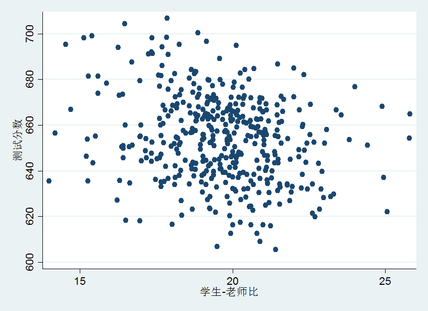
根据散点图和相关系数，我们大致可以判断基于这些数据的直线应该是向右下倾斜。只要我们画出这条线，我们就得到了斜率\(\beta_1\)的估计值。但是我们如何画出这条线呢？最常用的方法就是普通最小二乘（OLS）来拟合这些数据。
（1）OLS估计量 OLS估计量使得估计的回归线尽量的接近观测数据。而接近程度则由给定X条件下，预测Y的误差平方和来测度。
假设\(\hat\beta{_0}\)和\(\hat\beta{_1}\)用来表示\(\beta_0\)和\(\beta_1\)的估计量。那么，第i 个观测值的误差为\(Y_i-\beta_0-\beta_1X_i\)。那么，误差平方和为 \[\begin{equation} \sum_{i=1}^n{(Y_i-\beta_0-\beta_1X_i)^2} \end{equation}\]
根据第二讲的统计学理论，存在唯一一对\(\hat\beta{_0}\)和\(\hat\beta{_1}\) 来使得公式（6）最小化。由此得到的系数为\(\beta_0\)和\(\beta_1\)的OLS估计量。OLS回归线称为样本回归线或样本回归函数。第i个观测值\(Y_i\)与其预测值之差为余项（residual）：\(\hat{u}_i=Y_i-\hat{Y}_i\)。
OLS估计量的公式为 \[\begin{equation} \hat\beta{_1}=\frac{\sum_{i=1}^n{(X_i-\overline{X})(Y_i-\overline{Y})}}{\sum_{i=1}^n{(X_i-\overline{X})^2}} \end{equation}\] \[\begin{equation} \hat\beta{_0}=\overline{Y}-\hat\beta{_1}\overline{X} \end{equation}\]
OLS预测值及残差 \[\begin{equation} \hat{Y}_i=\hat\beta{_0}+\hat\beta{_1}X_i \end{equation}\] \[\begin{equation} \hat{u}_i=Y_i-\hat{Y}_i \end{equation}\]
（2）示例 我们用Stata14来估计OLS回归线： \[\begin{equation} \hat{Y}=698.9-2.28\times{X} \end{equation}\]
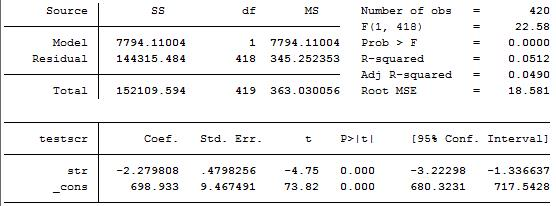
我们在Y上面加hat是为了区别它为基于OLS回归线的预测值。负斜率意味着班级规模越大，平均测试分数越低。
拟合度
我们已经估计出了班级规模对测试成绩效应的线性回归，如公式（11）。正如李院长质疑的，我们都可能疑惑，估计的线性回归线对数据的拟合程度如何呢？
在计量经济学中，\(R^2\)和回归标准误（SER）用来测量OLS回归线对数据的拟合程度。\(0\leq{R^2}\leq1\)测量的是\(X_i\)能解释\(Y_i\)的方差的比例。SER测量的是\(Y_i\) 离预测值有多远。
（1）\(R^2\)
根据预测值与残差的定义，可知 \[\begin{equation} Y_i=\hat{Y}_i+\hat{u}_i \end{equation}\]
根据\(R^2\)的定义，它的数学形式可以表达为回归平方和或者解释平方和（explained sum of squares，ESS）与总平方和（Total Sum of Squares，TSS）之比。 \[\begin{equation} ESS=\sum_{i=1}^n{(\hat{Y}_i-\overline{Y})^2} \end{equation}\] \[\begin{equation} TSS=\sum_{i=1}^n{(Y_i-\overline{Y})^2} \end{equation}\] 那么，\(R^2\)的公式为 \[\begin{equation} R^2=\frac{ESS}{TSS} \end{equation}\]
我们还可以这么思考：X不能解释Y的方差的比例，同样可以表示出\(R^2\)。不能解释的部分就是残差平方和（sum of squared residuals，SSR），即\(SSR=\sum_{i=1}^n{\hat{u}_i^2}\)。综上所述，\(TSS=ESS+SSR\)。据此， \[\begin{equation} R^2=1-\frac{SSR}{TSS} \end{equation}\]
注：一元回归中的\(R^2\)就是X和Y的相关系数的平方。\(R^2\)越接近于1，说明用X预测Y越好，即回归线拟合数据越好，反之亦然。
SER
回归标准误（SER）是回归误差标准差的估计量。它是观测值在回归线附近的分散程度的一种测量。OLS残差为\(\hat{u}_i\)。那么， \[\begin{equation} SER=\sqrt{S_{\hat{u}}^2},S_{\hat{u}}^2=\frac{1}{(n-2)}\sum_{i=1}^{n}{\hat{u}_i^2}=\frac{SSR}{(n-2)} \end{equation}\]
其中，OLS残差的样本均值为0。
例如，图2中的回归结果，\(R^2=0.0512,SER(MSE)=18.581\)。这意味着，班级规模可以解释测试分数方差的5.21%。而\(SER=18.581\)说明观测值在回归线附近分散较开，这也可以从图3中看出。
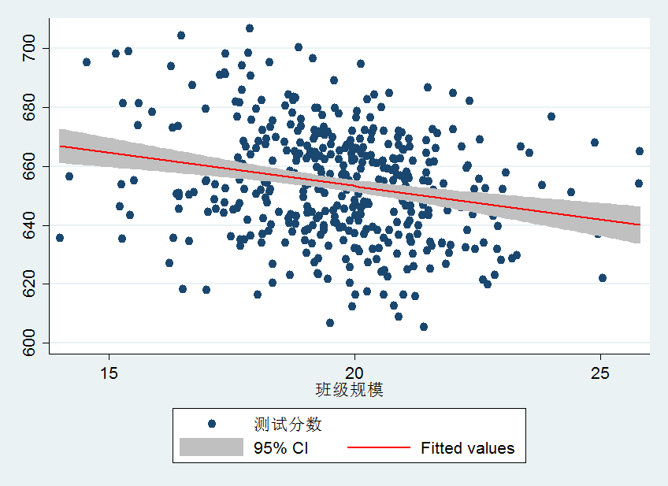
注意：事实上，\(R^2\)很小（或者\(SER\)很大）本身并不能说明回归的“好坏”。很小的\(R^2\)只是表面，除了解释变量X外，还有其它重要的因素影响Y。但是较小的\(R^2\) 或者较大的\(SER\)并不能给出缺失的重要因素是什么，它们仅仅说明现有的X只能解释Y方差的较小部分。
最小二乘的假设
下面，我们简单的介绍一下OLS的三个假设。
假设一：给定X的条件下，u的条件均值为0
这个假设是说，“丢弃”到残差项u里的其它因素与X无关，即给定X条件下，这些因素的分布均值为0。该假设等价于总体回归线就是给定X条件下的Y的条件均值。且该假设也意味着\(corr(X,u)=0\)。
假设二：(\(X_i,Y_i\))是独立同分布
假设三：\(X_i,Y_i\)不可能有较大奇异值
较大的奇异值会使得OLS结果产生误差。这个假设就使得X，Y有非零的四阶矩：\(0\leq{E(X_i^4)}\leq\infty\),\(0\leq{E(Y_i^4)}\leq\infty\)。也就说，X和Y 存在有限峰度。可能的来源：1、输入错误；2、单位错误。如果输入错误，就纠正它，如果不能纠正，就从样本中删除。
假设检验和置信区间
第一部分概述了一元回归系数的估计，这个部分将概述估计量有多精确地描述了抽样不确定性。
回归系数的假设检验
有一些人武断地说，班级规模并不会对测试分数产生影响。也就说，总体回归线的斜率\(\beta{_1}=0\)。下面，我们就来检验斜率是否为0。也就说，我们先假设\(\beta{_1}=0\) （原假设）。然后，我们来判断是否接受或者拒绝原假设。
首先，我们回顾一下3.2节中的总体假设检验。
原假设为Y的均值为某一特定值\(\mu_{Y,0}\)，可以写成\(H_0:E(Y)=\mu_{Y,0},H_1\neq\mu_{Y,0}\)。
假设检验分三步走：
1、计算\(\overline{Y}\)的标准误\(SE(\overline{Y})\)；
2、计算t统计量，即\(t=\frac{(\overline{Y}-\mu_{Y,0})}{SE(\overline{Y})}\)；
3、计算p值，它是拒绝原假设的最低显著性水平。双边假设p值为\(2\Phi{(-|t_{act}|)}\)，其中，\(t_{act}\)是计算得到的t统计量，\(\Phi\)是积累标准正态分布。
在实践中，第三步的p值通常与临界值比较。例如，5%显著性水平的双边假设对应着\(|t_{act}|>1.96\)。即是说，总体均值在5%的显著性水平下显著异于假设值。
系数的假设检验
上面已经提到过，有些人觉得小班没有效果。我们应该假设\(\beta_1=0\)，那么，原假设和双边备择假设为 \[\begin{equation} H_0:\beta_1=0~~vs.~~H_1\neq0 \end{equation}\]
那么，按照上述三步走：
第一步：计算\(\hat{\beta}_1\)的标准误\(SE(\hat{\beta}_1)\)。该标准误是\(\sigma_{\hat{\beta}_1}\)的一个估计值。即 \[\begin{equation} SE(\hat{\beta}_1)=\sqrt{\hat{\sigma}_{\hat{\beta}_1}^2} \end{equation}\]
其中， \[\begin{equation} \hat{\sigma}_{\hat{\beta}_1}^2=\frac{1}{n}\times\frac{\frac{1}{n-2}\sum_{i=1}^n{(X_i-\overline{X})^2\hat{u}_i^2}}{[\frac{1}{n}\sum_{i=1}^n{(X_i-\overline{X})^2}]^2} \end{equation}\]
第二步：计算t统计量 \[\begin{equation} t=\frac{\hat{\beta}_1-0}{SE(\hat{\beta}_1)} \end{equation}\]
第三步：计算p值 \[\begin{multline} p-value=Pr_{H_0}[|\hat{\beta}_1-0|>|\hat{\beta}_1^{act}-0|]\\ =Pr_{H_0}[|\frac{\hat{\beta}_1-0}{SE(\hat{\beta}_1)}|>|\frac{\hat{\beta}_1^{act}-0}{SE(\hat{\beta}_1)}|]=Pr_{H_0}(|t|\geq|t^{act}|） \end{multline}\]
因为t统计量近似标准正态分布，因此 \[\begin{equation} p-value=Pr(|Z|>|t^{act}|)=2\Phi(-|t^{act}|) \end{equation}\]
如果p值小于5%，即是说，在5%的显著性水平下拒绝原假设。5%的显著性水平对应着1.96的临界值。
在实践中，我们并不用分别按照上述步骤计算出估计量和统计量，因为现在我们有计量经济学软件包，例如Stata。我们把数据导入stata中，输入回归命令就可以直接得到上述三个步骤的结果，如图2所示。
例如，从图2中可以看出，\(\beta_1\)的标准误为0.48，系数为-2.28，那么\(t=\frac{-2.28-0}{0.48}=-4.75\)。t统计量的绝对值大于1.96，也就是在5% 显著性水平下拒绝原假设。其实，我们计算的t统计量绝对值还要大于2.58 （1%）。
置信区间
从样本数据并不能得到系数的真值。但是，我们能根据OLS估计量和标准误构建一个包含真值的置信区间。
系数\(\beta_1\)的95%置信区间：
1、用5%显著性水平的双边假设检验不能拒绝的一系列值；
2、有95%的可能性包含\(\beta_1\)真值的区间
当样本规模很大时，\(\beta_1\)的95%置信区间为 \[\begin{equation} [\hat{\beta}_1-1.96SE(\hat{\beta}_1),\hat{\beta}_1+1.96SE(\hat{\beta}_1)] \end{equation}\]
例如，班级规模与测试分数回归中的\(\beta_1\)的95%置信区间为\([-2.28\pm1.96\times0.48]=[-3.22,-1.34]\)
虚拟变量
迄今为止，我们讨论的自变量为连续型变量。还有一类回归因子为二值，即它只取两个值——0和1。例如，当班级规模小于20人时为小班，X取值为1，当班级规模大于等于20人时为大班，X取值为0。这样的变量也被称为指示变量、哑变量或虚拟变量。
虚拟变量回归与上述回归相同，但是对于虚拟变量回归系数的理解却有些不同。
二值因变量回归实际上就是执行了一个均值差分。假设\(D_i\)等于0或1，取决于班级规模大小： \[D_i=\begin{cases} 1,\quad X<20 \\ 0,\quad X\geq20 \end{cases}\]
总体回归方程为 \[\begin{equation} Y_i=\beta_0+\beta_1D_i+u_i \end{equation}\]
因为\(D_i\)是二值，那么，不能再将\(\beta_1\)理解成斜率，因为回归方程不是一条线了。那么，我们应该如何理解\(D_i\)呢？当\(D_i=0\)时，回归方程变成 \[\begin{equation} Y_i=\beta_0+u_i \end{equation}\]
因为\(E(u_i|D_i)=0\)，所以\(E(Y_i|D_i=0)=\beta_0\)。也就是说，\(\beta_0\)是大班的情况下的平均分数。类似地，当\(D_i=1\)时，回归方程变成 \[\begin{equation} Y_i=\beta_0+\beta_1+u_i \end{equation}\]
因此，\(E(Y_i|D_i=1)=\beta_0+\beta_1\)；即是说\(\beta_0+\beta_1\)是小班的平均分。
综上所述，\((\beta_0+\beta_1)-\beta_0=\beta_1\)就是小班和大班平均分数的差异。换句话说，\(\beta_1=E(Y_i|D_i=1)-E(Y_i|D_i=0)\)。因为\(\beta_1\)是总体均值之间的差异，因此，OLS估计量就是两个组的Y的平均值之差。
假设检验和置信区间与前面内容相同。
例如，小班教学的例子中，设置学生-老师比小于20时虚拟变量为1，其余为0。 回归结果如下图所示。
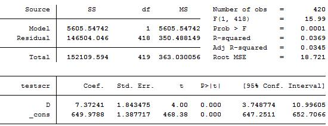
STATA教程（一）
Stata是一款流行的统计软件包。目前已经更新至stata15，更多详细信息可参见www.stata.com。本讲稿向大家介绍Stata以及上述回归的操作。
我使用的Stata14 MP版。点击桌面的“stata”图标，打开之后的界面如下图
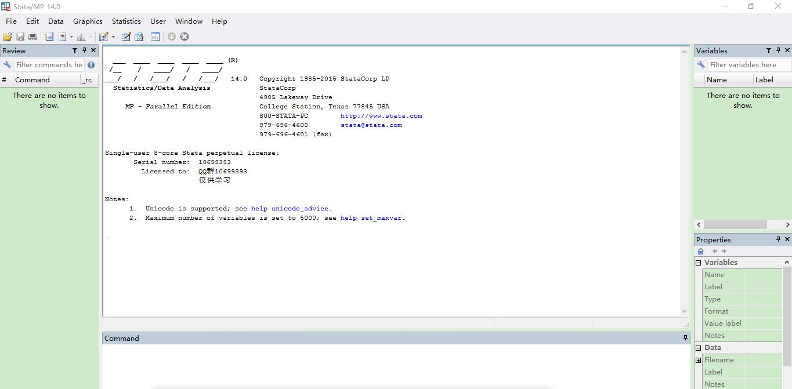
stata面板最上面是“菜单栏”
左边窗口是“历史命令”
中间上窗口是“结果显示”
中间下窗口是“命令”
右边上窗口是“变量名”
（1）数据输入
首先点击“菜单栏”中的“Data”—“Data Editor”，选择“Data Editor（Edit）”，就会出现如下窗口

在这个界面，我们可以手动输入数据，也可以直接从Excel中复制粘贴。我们输入的数据如下：
| obs | testscr | str |
| 1 | 690.8 | 17.889 |
| 2 | 661.2 | 21.5247 |
| 3 | 643.6 | 18.6713 |
| ⋮ | ⋮ | ⋮ |
得到如下界面：

单击第一列的灰色方框，可以看到右侧下窗口“properties”变成
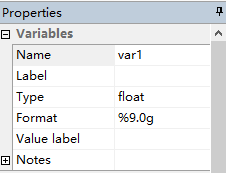
单击其中的“name”，修改“var1”为“testscr”。同理，也可以把“var2”修改为“str”。得到下图的数据输入结果。

与此同时，我们还可以在stata主面板上看到如下结果
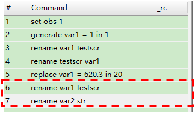
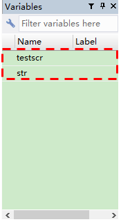
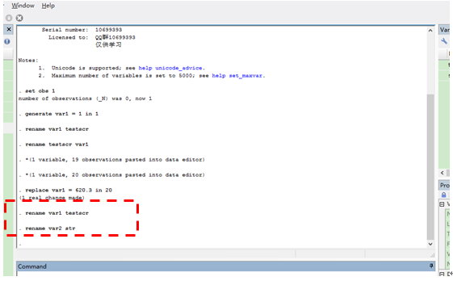
打开data editor（edit）的另一种方式是点击菜单栏中的表格按钮“data editor（edit）”。
这样输入数据很麻烦，也会出很多错误。下面还会介绍另一种输入数据的方式。
通常，我们会查看一下现存的一些变量，可以输入下列命令
| listvarname1varname2… |
|---|
我们上面的变量名，所要输入的命令是
listtestscrstr
这个命令将会把所有变量的观测值都列示在结果窗口中。缺失数据会用“.”表示。但是一旦样本量大了，这种列示所有观测数据的方法就不适用了。要想终值列示进程，可以点击菜单栏中的“break”按钮。以后再介绍另一些检查错误的方式。你会看到如下界面
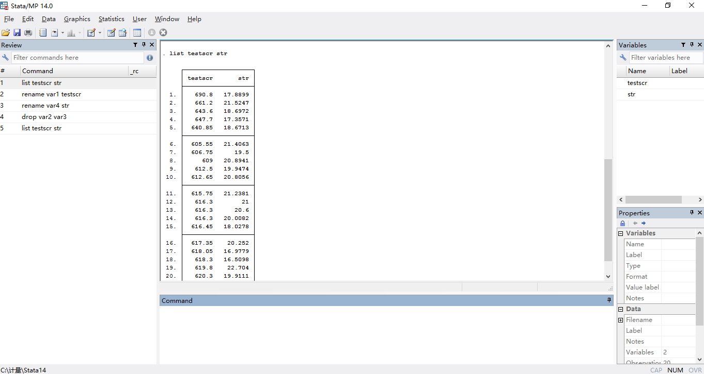
如本讲中，我们需要知道样本数据的统计特征。我们可以输入如下命令
sumtestscrstr,detail
我们可以得到下图
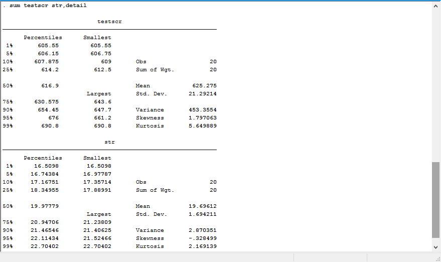
散点图的命令为
scattertestscrstr
得到的图形如下
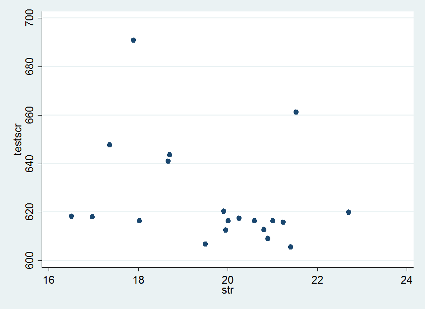
我们还想看看散点图的拟合线。命令如下
twowayscattertestscrstr|| lfittestscrstr
得到的图如下：
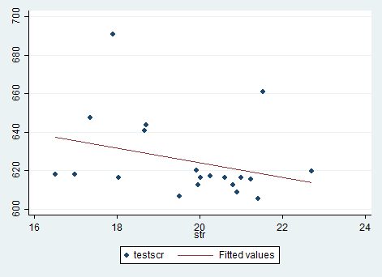
而简单的回归的命令为
regtestscrstr
得到的结果如下
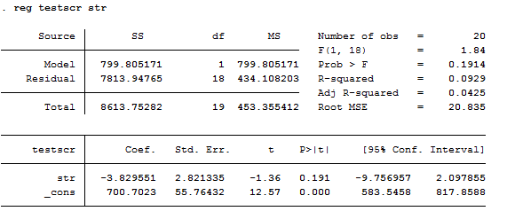
而稳健标准误的回归命令为
regtestscrstr,r
得到的结果如下
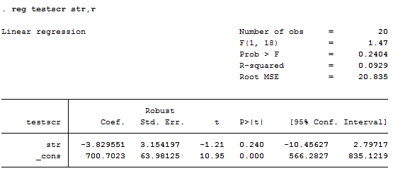